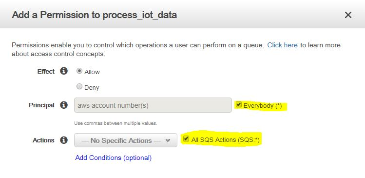

Written on
IoT notification using AWS - P2
Setting up SQS for receiving notifications.
Now there could be other methods to do the same. Like we can trigger the lambda as soon as the data arrives at AWS IoT core. That’s also fine. But think like this, you have thousands of devices hitting the same endpoint, and you want to send out notifications to multiple destinations on certain conditions. In this case, the AWS SQS service comes in. AWS SQS is designed to process the requests asynchronously. So handling the request in distributed environment with AWS SQS seems a good fit for this scenario. Let’s start configuring AWS serverless stack for email notifications.
Step #1
Register and verify the email address of sender and recipients in AWS SES -> Email Addresses
Step #2
Open AWS Lambda service and create lambda.
Make sure to include AmazonSESFullAccess policy to the role attached to your lambda.
Replace the placeholder value and use the below script
import boto3
import json
from datetime import datetime
def lambda_handler(event, context):
client = boto3.client('ses')
if 'Records' in event:
for record in event['Records']:
iot_data = json.loads(record['body'])
timestamp = iot_data['ts']
readable_time = datetime.fromtimestamp(int(timestamp/1000)).strftime('%Y-%m-%d %H:%M:%S')
message_body = 'Temperature seems high. Latest recorded temperature is <strong>{0}</strong> on <strong>{1}</strong>.<br><br>Heat Index: {2}<br>Humidity: {3}<br><br>Notification sent from <strong>{4}</strong>.'.format(
iot_data['temperature'], readable_time, iot_data['heat_index'], iot_data['humidity'], iot_data['device_id'])
client.send_email(
Source='<SENDER EMAIL>',
Destination={
'ToAddresses': ['RECIEVER EMAIL'],
},
Message={
'Subject': {'Data': 'Temperature Alert! - {0}'.format(readable_time)},
'Body': {
'Html': {'Data': message_body}
}
},
)The source is also available on GitHub here.
Step #3
Go to AWS SQS and create a standard queue. Perform below actions.

Add permission

and then attach the lambda function.
Step #4 We will create a rule in AWS IoT for sending request to AWS SQS when the temperature goes to 25° Celsius and also add timestamp to data arriving to the AWS IoT.
Use the below query and add the action “Send a message to an SQS queue”.
SELECT timestamp() as ts, * FROM 'Node/#' WHERE temperature >= 25
I am using wildcard-based Topic name
Node/#in the above query, which is also our device name. So, our rule is valid for all those which has the device id asNode/1,Node/2,Node/3and so on.
Finger crossed. Let’s check the network, connection to sensor and connect the device. Give some heat to the sensor, and you shall receive the email notification.